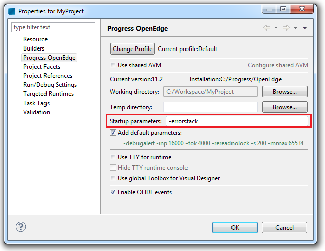

| OEUnit - Unit Testing Framework |
Once you have downloaded OEUnit. Extract all files in the archive to a folder somewhere (e.g. C:\Workspace\OEUnit ).
Add an entry to PROPATH pointing to the \src folder where you extracted the archive.
If you're using OpenEdge Architect, you can add an entry to the PROPATH from the
project properties page (shown below).
Note: You must add this propath entry for each OpenEdge project that you wish to use OEUnit with.
It is recomended that you use the -errorstack session startup parameter when running OEUnit tests. Using this parameter allows you to see the call stack when an error is thrown during a test run. See the OpenEdge Deployment: Startup Command and Parameter Reference for more information on the -errorstack session startup parameter.
If you're using OpenEdge Architect, you can add session startup parameters from
the project properties page (shown below).
Note: You must add this parameter for each OpenEdge project that you wish to OEUnit with.

If you're using OpenEdge Architect, it is recommended that you add an action to the ABL Editor's Context Menu (see steps below). Having this action in the context menu allows you to quickly run a test and have the test results displayed in a window that is docked in OpenEdge Architect (see Running a Test).
1. In OpenEdge Architect, from the OpenEdge Editor perspective, click OpenEdge > Tools > Customization Edtior.
2. From the Available Extension Points, click Edtior Context Menu and then click Add.
3. In the Action Details, enter the following information:
| Name: | Run As Test |
| Accelerator: | <A Key combination - Keyboard shortcut to 'Run As Test'> |
| Icon: | <Path where files extracted>\src\OEUnit\UI\Icons\OEUnit.ico |
| Tooltip: | Run this class as an OEUnit Test |
| Program: | OEUnit/UI/RunAsTest.p |
| Parameters: | <Blank> |
| Configuration: | <Blank> |
| Send file name of current selection: | Yes |
| Run Persistent: | Yes |
4. Once the above information has been entered, click Save and
then click Refresh Customization Options in the top left corner
of the Customization Editor.
5. If you right-click to open the context menu from the ABL Editor, you should
see the new menu item Extensibility > Run As Test.